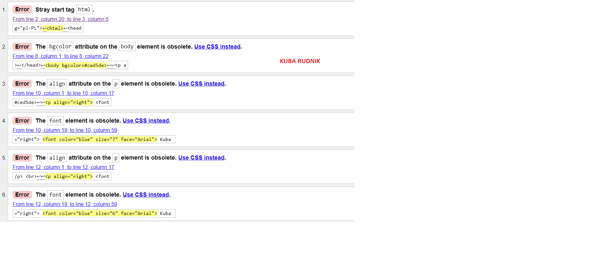

Walidacja jest to proces sprawdzania
strony internetowej za pomocą specjalnego programu
lub innej strony internetowej pod kątem czy nie ma błędów składniowych.
Screen z walidacji

Screen po poprawie błędu(pierszego błedu)